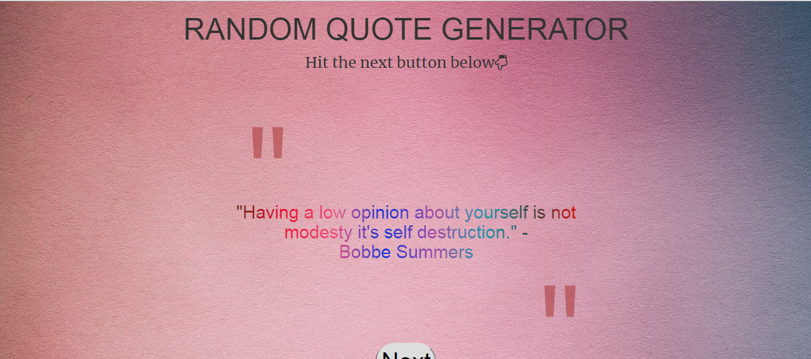

This is the Drawing app. Once I was surfing the internet then I got the idea of this project and immediately thought of working on it. It required a sound knowledge of the Canvas ,Canvas animation , and also the CSS grid system for the proper alignment. I have included a input tag to take the input for various colors and thickness of the paint brush. Other than that I have also included an eraser to undo any unncessary drawing. You can have a view on the project here and its code here.
This is the Random Quote Machine whice will produce random quotes everytime you press the button next with some animation. I got the project idea while doing the freecodecamp course. Here I have defined an array of quotes and every time we press the next button some random element of that array will be shown. It made me clear the dom manipulation both through jQuerry and JavaScript . You can have a view on the project here and its code here


This was my very first portfolio which was made with the help of HTML,CSS, and Bootstrap. The biggest obstacle while developing this was to make it responsive. But atlast I managed to make it responsive both for the phones and pc . This project was my first project and it did make me learn many things in this field. You can have a view on the project here and its code here
This is my first HTML5 game and the one which I enjoyed the most. The game is quite simple to play but it made me learn some deep aspects of canvas animation through jQuery and JavaScript.. You can have a view on the project here and its code here


This is my first canvas animation project. A running clock which gives the correct time. It uses the Date() object predefined in JavaScript and u=its methods to extract the correct time and I can say this was the most difficult project which I have taken in. You can have a view on the project here and its code here